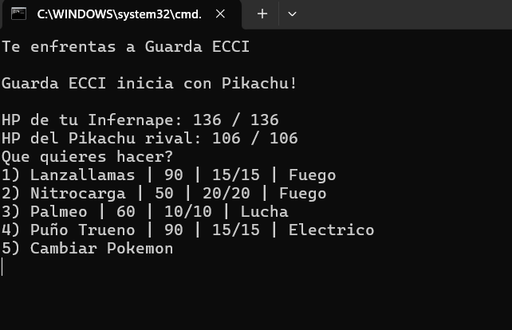
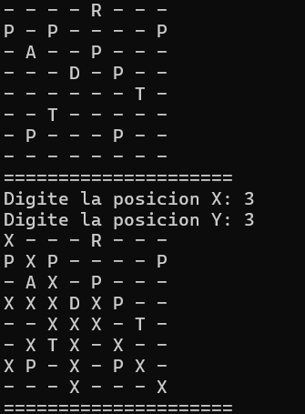

Proyectos

Project Pokemon ECCI
Proyecto de Pokemon muy primitivo en consola. Permite batallar y calcula eficacias, críticos y potencias variantes. Basado en la prestigiosa (no) ECCI.
Tecnologías: JAVA
Ver en GitHub
Project Tetris 1.0
Proyecto que simula el famoso juego Tetris con una regla especial. Interfaz gráfica implementada con Java Swing y puntaje.
Tecnologías: JAVA
Ver en GitHub

Posibles movimientos Chess
Recibe coordenadas de una pieza y devuelve todos sus posibles movimientos según esa pieza
Tecnologías: Java
Ver en GitHub e-Mail
e-Mail Instagram
Instagram GitHub
GitHub